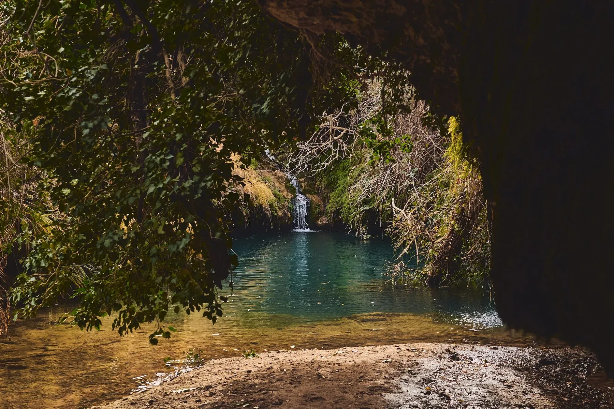
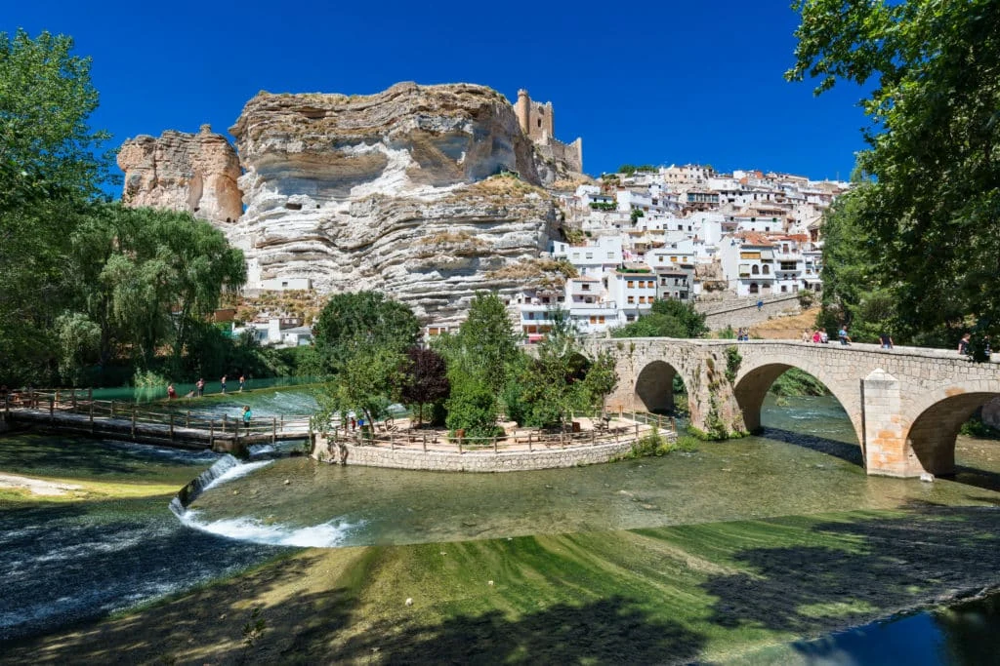
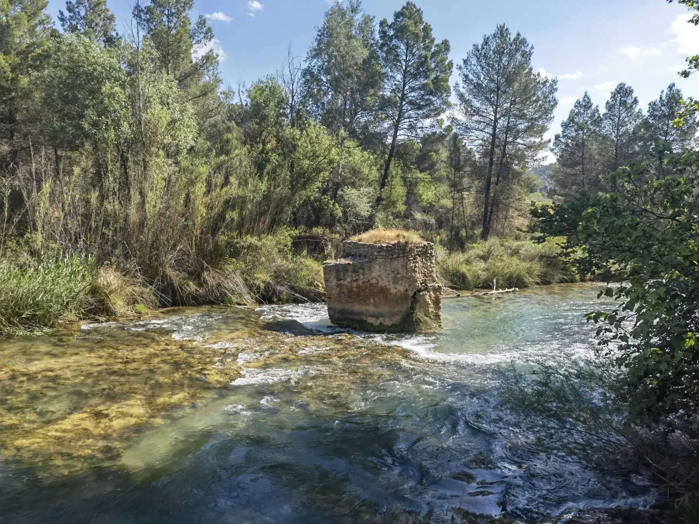
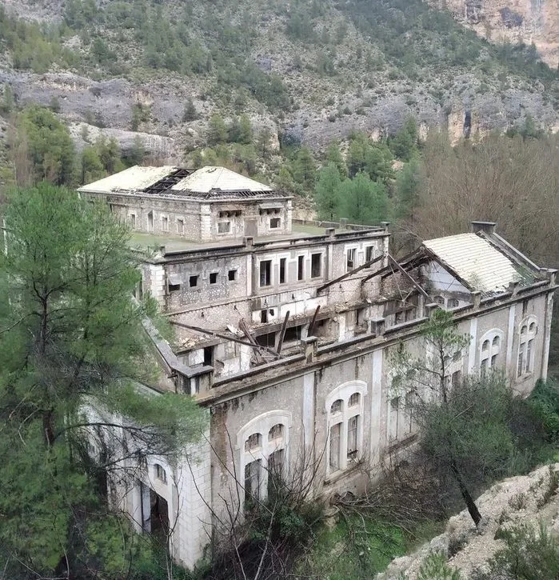
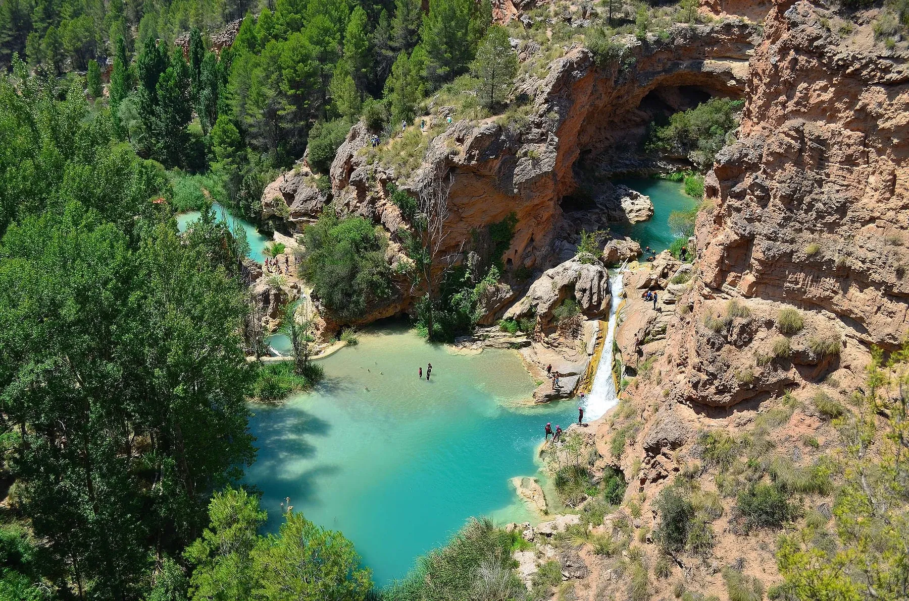
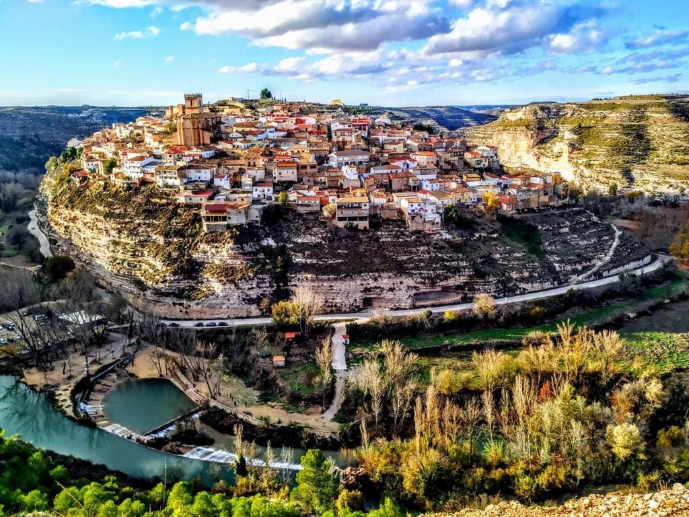
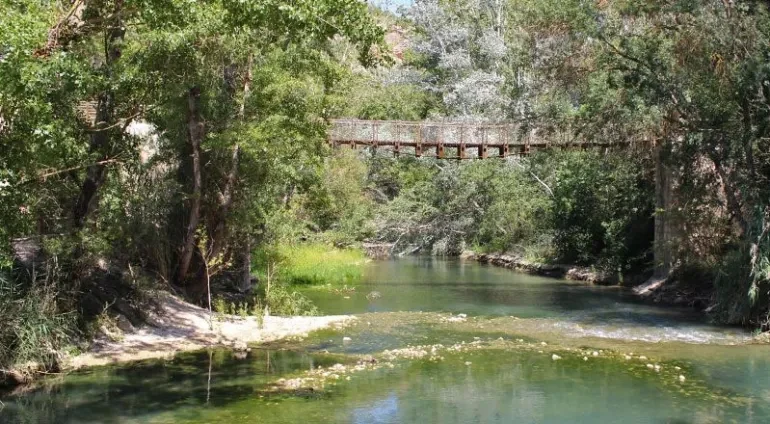

00 — CONOCE LOS PARAJES
Antes de sentarte a la mesa, vale la pena conocer el paisaje que la inspira. Estos son algunos de los parajes que rodean Casas-Ibáñez y que forman parte de nuestro recorrido: pueblos encajados en cañones, cuevas con agua escondida, cauces que se abren paso entre la piedra.

Cueva de los Ángeles
En Villamalea, una cueva con un pequeño arroyo cuyas formaciones de piedra recuerdan siluetas de ángeles. Restaurada para facilitar su acceso y conservación.
A 15 minutos de Casas-Ibáñez, por varias rutas de senderismo

Alcalá del Júcar
Uno de los pueblos más bellos de España, encajado en el cañón del Júcar y declarado Conjunto Histórico-Artístico. Puente romano, castillo musulmán del siglo XII y casas cueva excavadas en la roca.
Senderismo, piragüismo, pesca y rutas en 4x4

La Terrera
A orillas del Cabriel, dentro de la Reserva de la Biosfera de las Hoces del Cabriel. Una antigua central hidroeléctrica hoy en desuso marca el inicio de los paseos junto al río.
A 15 minutos del restaurante

Ruta del Molinar
Arranca en el embalse de El Molinar, junto a la ermita del Cristo de la Vida, y sigue el curso del Júcar entre bosques, cañones y pozas de agua cristalina hasta una central hidroeléctrica en ruinas.
El regreso incluye una rampa de 60 m y un túnel de casi 3 km

Las Chorreras
Cascadas y pozas de agua transparente en el valle del Cabriel. Un lugar propicio para el senderismo, los deportes de agua y la observación de aves.
A una hora de Casas-Ibáñez, ruta PR-CU-53 desde Enguídanos

Jorquera
Pueblo construido sobre un espolón rocoso, con casas asomadas al meandro del Júcar. Murallas almohades del siglo XII y la torre de Doña Blanca.
Mirador con vistas al pueblo y a los vecinos Cubas y Alcozarejos

Tranco del Lobo
Un paraje tranquilo en Casas de Ves, con arte urbano pintado sobre las fachadas de sus casas semiabandonadas.
Varias rutas de senderismo parten desde aquí